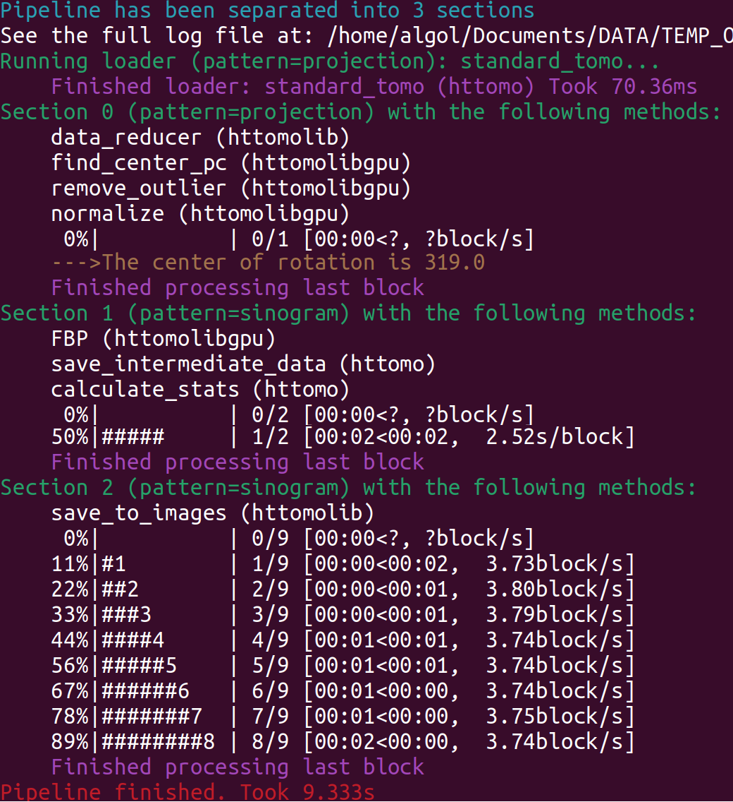

Interpret Log File#
This section contains information on how to interpret the log file created by HTTomo.
HTTomo uses loguru software to unify and simplify the logging system. During the job execution, the concise information
goes to the terminal (see Fig. 16) and also to the user.log file. More verbose information, that is usually
needed to debug the run, is saved into the debug.log file. Let us explain few main elements of the user.log
file and also stdout.
{kind=link}

Fig. 16 The screenshot of the terminal output (AKA stdout) which also goes into the user.log file.#
Pipeline has been separated into N sectionsThis means that N Sections created for this pipeline and each section contains a certain amount of methods grouped together to work on Blocks. The progress can be seen in every section processing all of the input data divided into Chunks and Blocks, before continue to the next section.
Running loaderThe loader does not belong to sections and always at the start of the pipeline. Note that the loader loads the data using the specific
pattern=projection(See more Re-slicing). The same pattern is used by the following section.
Section N with the following methodsEach section contains a number of methods that run sequentially for each Blocks of data. When all blocks are processed, the user will see the message
Finished processing the last block. This means that all of the input data have been processed in this section and the pipeline moves to the next section, if it exists.
50%|##### | 1/2 [00:02<00:02, 2.52s/block]These are the progress bars showing how much data is being processed in every section. The percentage progress bar demonstrates how many blocks have been processed by the M number of methods of the current section. Specifically in this case we have
1/2, which means that one of two blocks completed (hence 50%). Then00:02<00:02shows the time in seconds to reach the current block (time elapsed) and the remaining time to complete all iterations over blocks. The2.52s/blockpart is an estimation of how much time it’s taking per block. When the time per block is less than one second then this can be presented asblock/sinstead. Seesave_to_imagesprogress report, for instance.
Note
When interpreting progress bars, one possible misunderstanding can be an association of the progress with the methods completed. Because each piece of data (a block) can be processed by multiple methods, we report on how many blocks have been processed instead.